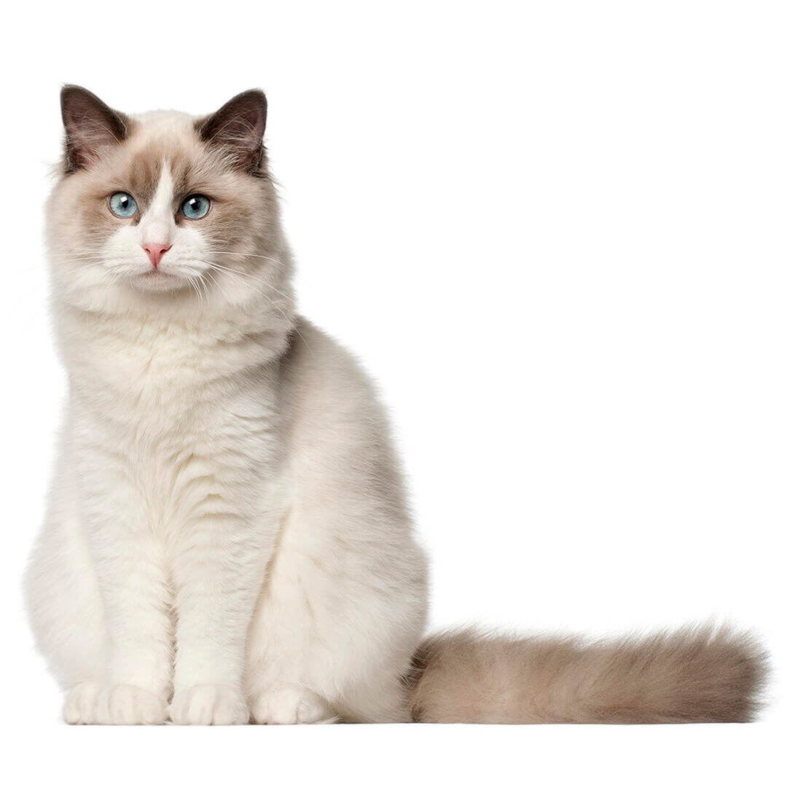
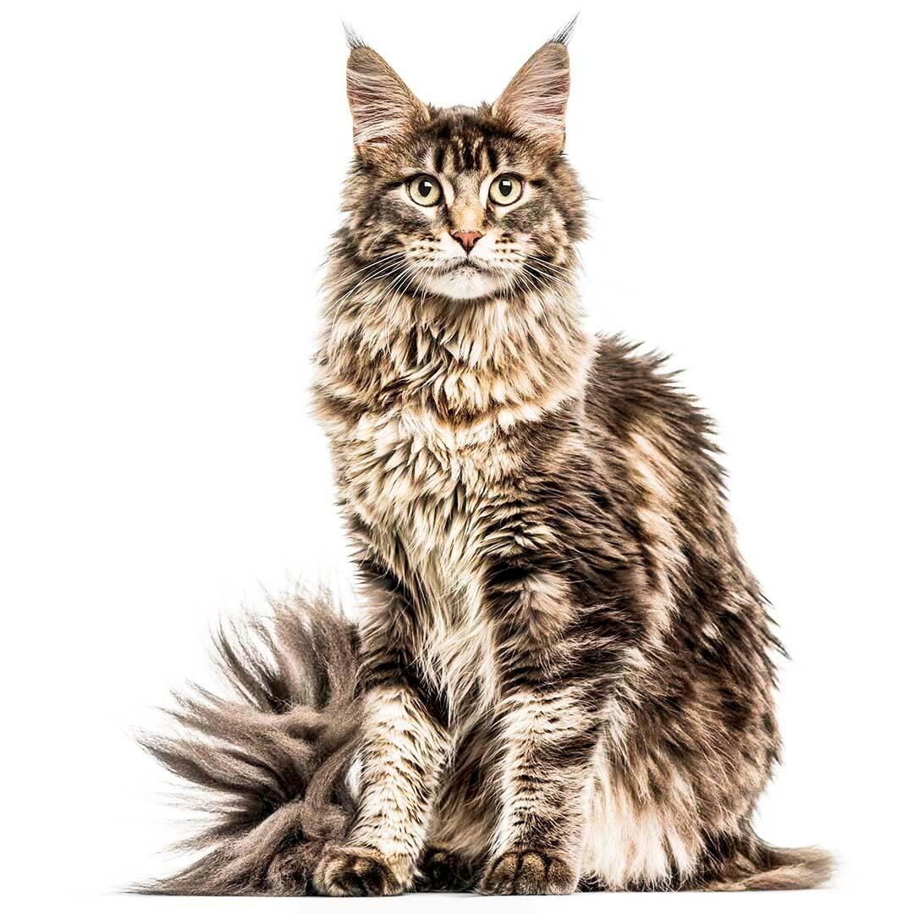
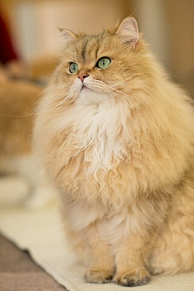

Razas de gatos: Un mundo diverso y fascinante
Existen cientos de razas de gatos en el mundo, cada una con sus propias características físicas, temperamento y necesidades. Esta diversidad refleja la historia de la domesticación del gato, que se remonta a miles de años atrás. A lo largo de este tiempo, los humanos han seleccionado gatos con características específicas para adaptarse a diferentes entornos, estilos de vida y preferencias.
Elegir la raza de gato adecuada
Al elegir una raza de gato, es importante considerar varios factores, como:
Estilo de vida: ¿Tienes un estilo de vida activo o sedentario? Algunas razas de gatos son más activas y requieren más ejercicio que otras.
Espacio: ¿Vives en un apartamento pequeño o en una casa grande? Algunas razas de gatos son más adecuadas para espacios pequeños, mientras que otras necesitan más espacio para correr y jugar.
Familia: ¿Tienes niños pequeños u otras mascotas? Algunas razas de gatos son más tolerantes con los niños y otras mascotas que otras.
Personalidad: ¿Buscas un gato cariñoso y juguetón o uno más independiente? Cada raza de gato tiene su propia personalidad distintiva.
Cuidado: ¿Estás dispuesto a dedicar tiempo y esfuerzo al cuidado de tu gato? Algunas razas de gatos requieren más cuidados que otras, como cepillado regular o baños.
Las 3 de las mejores razas de gatos
Si bien la elección de la raza de gato ideal depende de tus necesidades y preferencias individuales, aquí te presento una lista de 5 de las razas de gatos más populares y apreciadas por su belleza, temperamento y facilidad de cuidado:
1. Ragdoll

Características
Características físicas: Los Ragdoll son conocidos por su pelaje largo y sedoso, sus ojos azules y su temperamento dócil y cariñoso. Son gatos grandes y robustos que pueden llegar a pesar hasta 7 kg.
Temperamento: Los Ragdoll son gatos tranquilos y relajados que disfrutan de la compañía humana. Son ideales para familias con niños y otras mascotas.
Cuidado: El pelaje largo de los Ragdoll requiere cepillado regular para evitar que se enrede.
2. Maine Coon

Caracteristicas
Características físicas: Los Maine Coon son los gatos domésticos más grandes, con un cuerpo largo y musculoso, una cola espesa y peluda y orejas con mechones. Son conocidos por su apodo de "gigantes gentiles" debido a su temperamento dócil y juguetón.
Temperamento: Los Maine Coon son gatos inteligentes y activos que disfrutan de jugar y explorar. Son ideales para familias con niños y otras mascotas.
Cuidado: El pelaje largo y grueso de los Maine Coon requiere cepillado regular para evitar que se enrede.
3. Gato Persa

Caracteristicas:
Características físicas: Los Persas son conocidos por su pelaje largo y grueso, su cara plana y su nariz corta. Son gatos tranquilos y cariñosos que disfrutan de la compañía humana.
Temperamento: Los Persas son gatos tranquilos y relajados que no requieren mucha actividad física. Son ideales para personas que viven en apartamentos o para aquellos que buscan un compañero tranquilo.
Cuidado: El pelaje largo y grueso de los Persas requiere cepillado diario para evitar que se enrede.